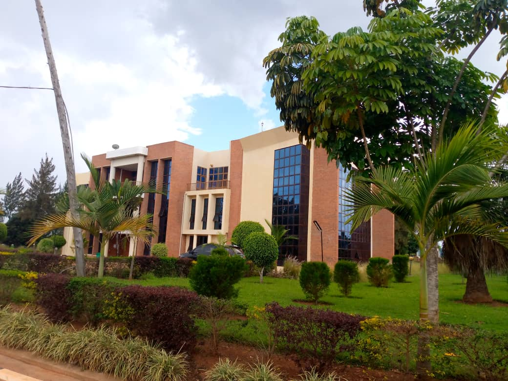
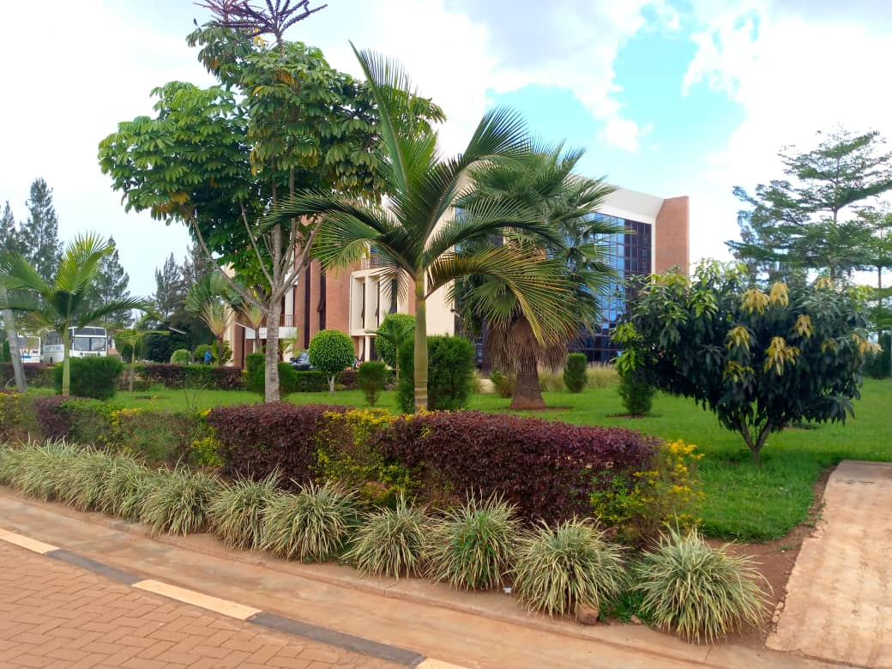
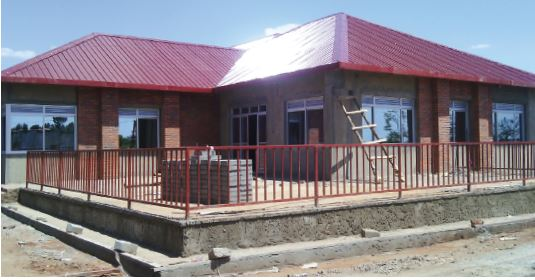

Front view of the new Girls Hostel
Front view of the new Girls Hostel 
Rukara campus is mandated to train and produce qualified teachers needed for the effective implementation of the Nine Years Basic Education, hence providing the Country with a well-trained human capital to contribute to the national sustainable development.
VISION, MISSION AND CORE VALUES OF UR-COLLEGE OF EDUCATION, RUKARA CAMPUSUR-CE, Rukara Campus, envisions being an international centre of excellence of education professional training and research. Its mission is to train and produce knowledgeable, skilled, innovative and highly responsible educators in relevant professional disciplines to meet the changing needs of the Rwandan society and the world at large. UR-CE, RUKARA Campus values:
|
 |
In 2008, Rukara College of Education started in difficult conditions: lack of adequate classrooms, poor students' accommodation, lack of office space, lack of water and reliable electricity, etc. Therefore, facilities and equipment put in place in the recent few years were aimed at meeting facilities challenge. In some cases, the modernization plan of the Campus infrastructure required the demolition of some old buildings which were replaced by the new splendid ones. This is for example the Library and Lecturers' Offices Block and the Administration Block shown in the pictures below.
| Front view of the new Girls Hostel |
 Rukara Campus Multipurpose Hall |  The current state of the construction works of the Campus Canteen |